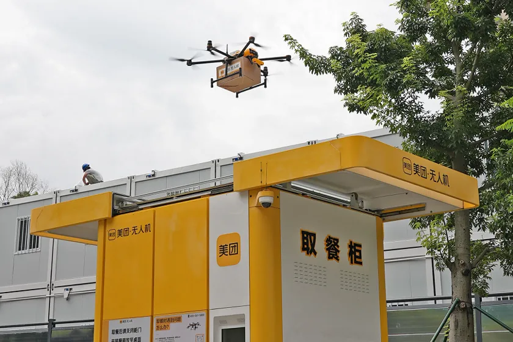

Case 01 · Autonomous drone delivery
Scaling drone delivery through navigation reliability
Broke a 50% route-growth target into three reliability workstreams, so the network could grow without adding operators.
16.8%shorter intervention on recovered flights
2 modesmonitor-only and return to autonomy